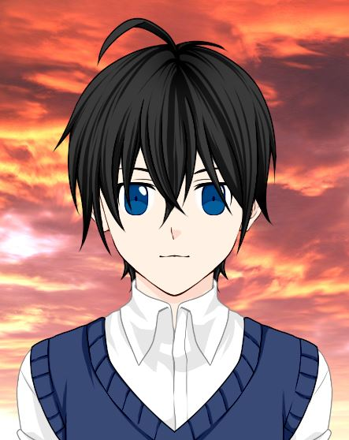

Ficha de personajes: Nathan Black.

Nathan Black, heredero de la familia Black.
Datos personales.
- Nombre y apellido.
- Nathan Black.
- Fecha de nacimiento.
- 15/06
- Elemento.
- Agua.
- Nación.
- Nación de las Marismas.
- Altura.
- 180cm.
Personalidad.
- Puntos buenos.
- Misterioso. Curioso. Inteligente. Bueno. Dedicado.
- Puntos malos.
- Sarcástico. Soñador. Ingenuo.
- Ambiciones.
- Poder vivir cómo quiere.
Aficiones y gustos.
- Color preferido.
- Naranja.
- Comida preferida.
- Dorada a la plancha.
- Aficiones.
- Novelas de misterio.
Habilidades principales.
Elemento básico.
- Bajo.
- Tsunami.
- Medio.
- Rayo de agua.
- Fuerte.
- Cascada.
- Protección.
- Escudo básico.
Sellos básicos.
- Protección.
- Escudo circular.
- Curación.
- Sanación.
- Ataque.
- Copiador.
Físicos.
- Esgrima.
- Muy bueno.
- Tiro con arco.
- Muy bueno.
Estadísticas.
- Elemento.
- 469/1000
- Sellos.
- 547/1000
- Físico.
- 398/1000
Cursos estudiados.
| Curso |
Años |
Rango de edad |
Obligatorio o no obligatorio |
| Básico |
4 |
12-15 |
Obligatorio |
| Medio |
3 |
16-18 |
Obligatorio |
| Superior |
3 |
19-21 |
No obligatorio |
| Especialización |
2 |
22-24 |
No obligatorio |
Notas globales.
| Curso |
Media |
| Básico |
Excelente. |
| Medio |
Excelente. |
| Superior |
Notable alto. |
| Especialización |
Excelente. |